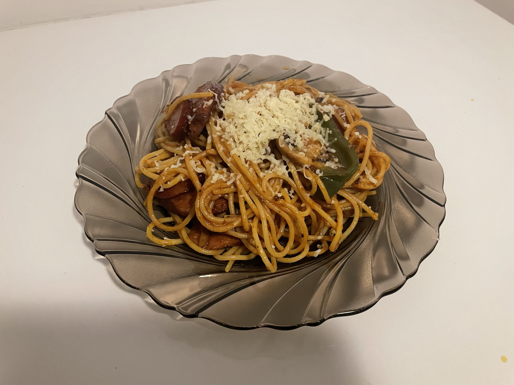
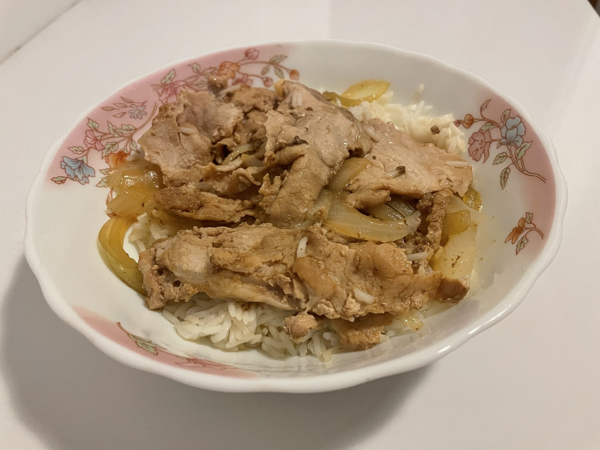
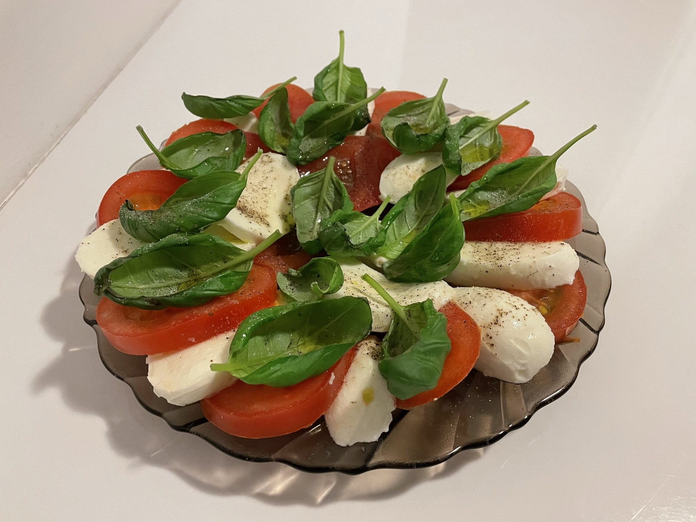

Hobby/Gotowanie
< wróćNapolitan
Makaron i keczup - tak właśnie Japończycy widzą gotowanie w stylu europejskim. To danie łączy w sobie europejskie składniki i japońskie podejście do gotowania. Podobnie pierwszy Napolitan był ugotowany w Jokohamie.
Gyudon
Miska ryżu z cienko krojoną wołowiną - typowy fast food w kraju wschodzącego słońca. Istnieją aż trzy sieci restauracji które oferują różne typy tego dania: Yoshinoya, Sukiya i Matsuya.
Caprese
Klasyczna włoska sałatka. Pokrojone pomidory, mozzarella i liście bazylii, ułożone naprzemiennie, tworzą barwy włoskiej flagi.